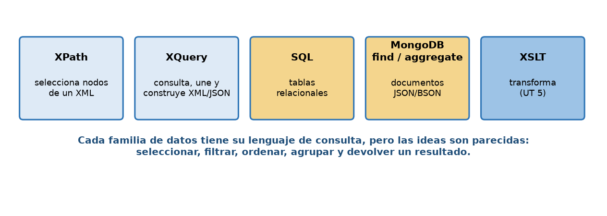

Inicio › UT6
Los mismos pedidos existen en MySQL (relacional), como XML, como JSON y como CSV. Estos son los ficheros generados desde la base de datos y los resultados reales de varias consultas.
Consultas XQuery (Saxon)
| Consulta | Resultado |
|---|---|
//pedido[@estado="pendiente"]/@id/string() | P001 P004 |
for $p in //pedido return concat($p/@id, ": ", count($p/linea)) | P001: 2 · P002: 1 · P003: 1 · P004: 2 |
sum() de unidades por pedido, ordenado por importe | P001: 214.55 € · P004: 158.9 € · P002: 34.5 € · P003: 13.9 € |
Consultas MongoDB
db.pedidos.find({estado:'pendiente'}, {_id:0, id:1, cliente:1})
[ { id: 1, cliente: 'Ana López' }, { id: 4, cliente: 'Carmen Sánchez' } ]
db.pedidos.aggregate([{$unwind:'$lineas'}, {$group:{_id:'$lineas.producto', unidades:{$sum:'$lineas.cantidad'}}}, {$sort:{unidades:-1}}])
[ { _id: 'Cable Cat6', unidades: 7 }, { _id: 'Router AX3000', unidades: 3 }, { _id: 'Switch 8 puertos', unidades: 3 } ]
Exportar desde MySQL
mysql --xml -u usuario -p tienda -e "SELECT ..." > pedidos.xml
mysql -B -u usuario -p tienda -e "SELECT ..." | tr '\t' ';' > lineas.csv
SELECT JSON_ARRAYAGG(JSON_OBJECT('id', ..., 'lineas', (SELECT JSON_ARRAYAGG(...)))) ... -- JSON anidado
